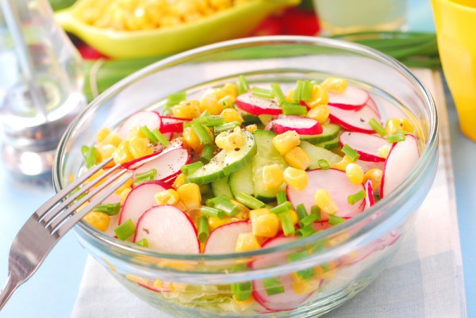

Салат з редискою і кукурудзою

Рецепт легкого весняного салату з редиски, огірків і кукурудзи.
Інгредієнти:
- пучок редиски
- огірки – 2-3 шт.
- банка консервованої кукурудзи
- листя салату – великий пучок
- твердий сир – 50 г
- пучок зелені (зелена цибуля, петрушка, кріп)
- 2 зубчики часнику
- рослинне масло – 3 ст.л.
- лимонний сік – 1 ст.л.
- сіль, чорний перець – за смаком
Рецепт приготування:
- Салат і зелень подрібнити, викласти в салатницю.
- Додати кукурудзу, натертий на тертці сир, нарізані кружальцями огірки і редиску, перемішати.
- Приготувати заправку з рослинної олії, подрібненого часнику і лимонного соку.
- Полити салат заправкою, ще раз перемішати, посолити і поперчити за смаком.